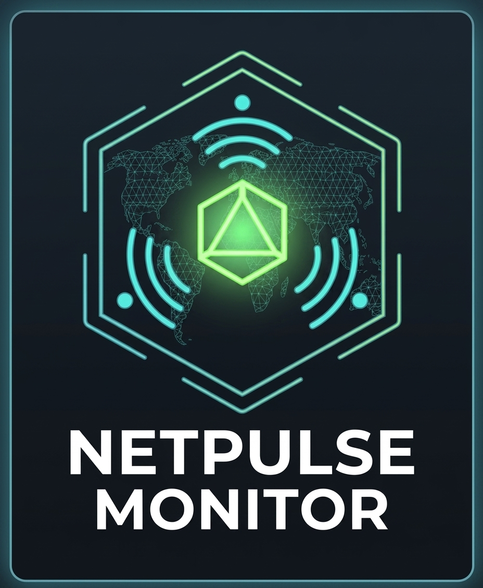

NETPULSE MONITOR
SYSTEM NOMINAL
00:00:00
📊
0
Online
0
Degraded
0
Offline
—
Avg
100.0
% Uptime
SETTINGS
General
Visual
Add IP Address
General
Polling Interval (ms)
Ping Timeout (ms)
Max Retries
Visual
Chart Type
Heartbeat ECG
Solid Step Area
Digital Grid Bar
Gradient Wave
Scatter Dots
Glow Bars
Radar Sweep
Candlestick
Heat Wave
Stem Plot
Mountain
Dot Matrix
Bounce
Waveform Color
Grid Opacity
Glow Intensity
Sound Alerts
Desktop Notifications
Add IP Address
Enter a name and IPv4 address to monitor a new node.
ADD NODE
MONITORED NODES
EXPORT CONFIG
IMPORT CONFIG
⋯
🖥️ CORE TELEMETRY STREAM
EXPORT LOG
⚙